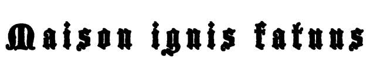

Maison de production et de distribution vidéo
Stephanie Elizabeth Creaghan et Florence Vallières Lepage collaborent depuis 2012, année où elles ont cofondé le collectif de performance Les Beaux Enfants. Leur première performance de longue durée, Tourner sur un dix cennes, fut présentée lors de la 14e édition du festival Montréal en Lumière/Nuit Blanche en 2013.
Depuis, elles travaillent de concert sur plusieurs projets, dont Effet de lumière (2013), une vidéo à trois canaux qui suit deux personnages à l’apparence ambiguë. Puis vient GLOSSOLALIA (2013), manifestation comique et absurde de la répétition de noms latins de fleurs en litanies, et CORPUS SANCTI (2014), leur première incursion dans les annales de l’hystérie en tant qu’objet d’étude de la médecine et la psychanalyse. En hiver 2016, elles fondent la maison de production et de distribution vidéo ignis fatuus, dont La lanterne est le premier opus.
Les malentendus et la répression basée sur le genre sont deux thèmes fondamentaux dans le travail de Creaghan et Vallières. Leurs recherches sur l’histoire et l’évolution du féminisme en tant que courant philosophique et mouvement vivant les ont amenées à se pencher sur les formes de transgression non violentes tels l’absurde et l’abject.
Stephanie Elizabeth Creaghan & Florence Vallières Lepage, cofondatrices
info@maisonignisfatuus.ca | Fondé en 2016